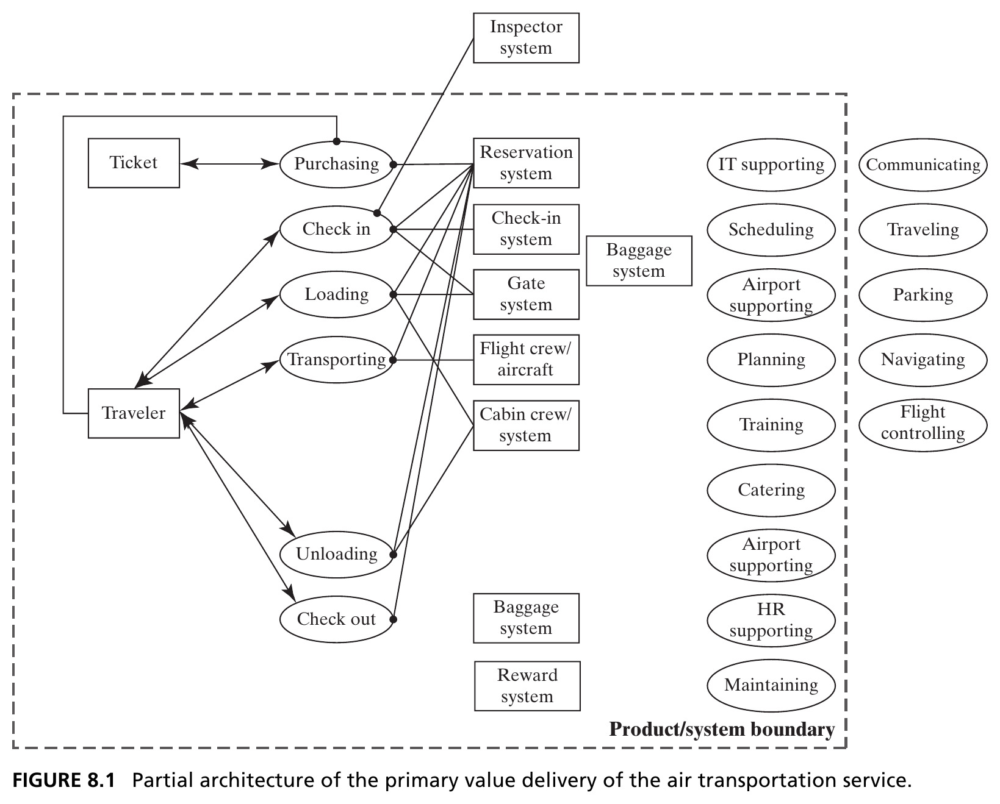
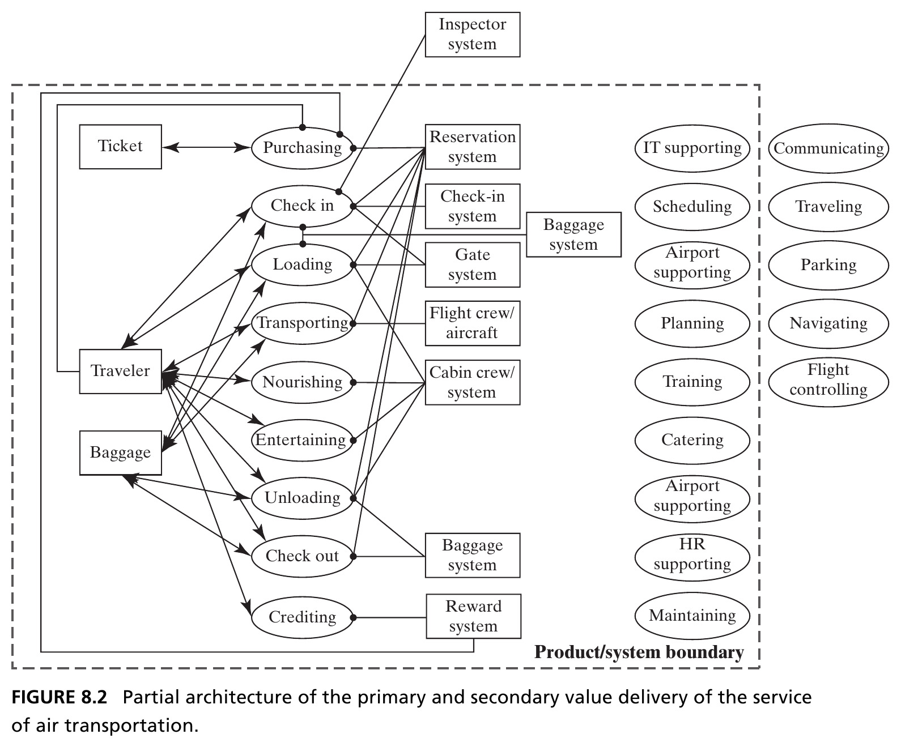
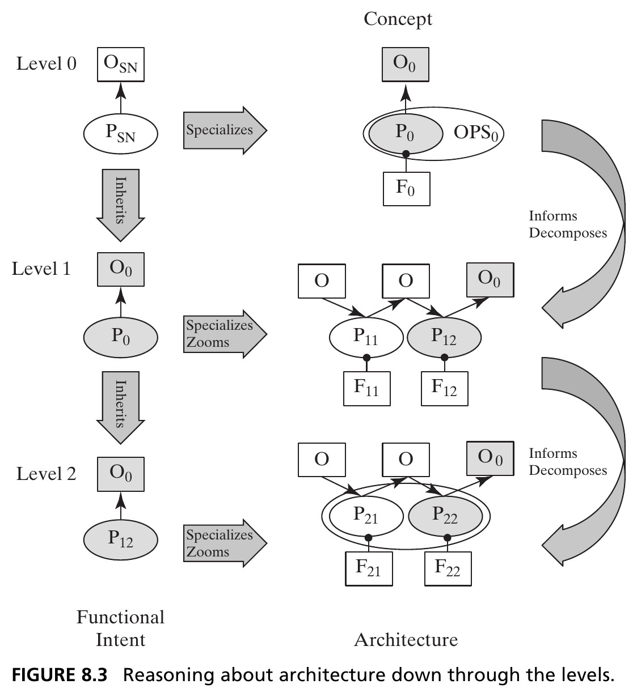
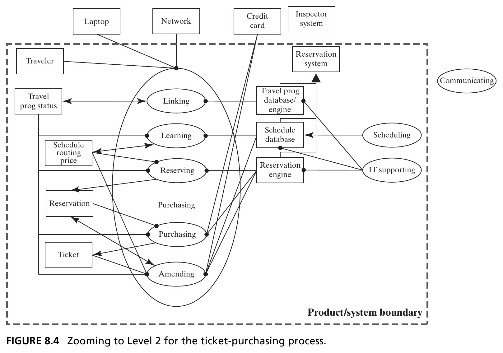
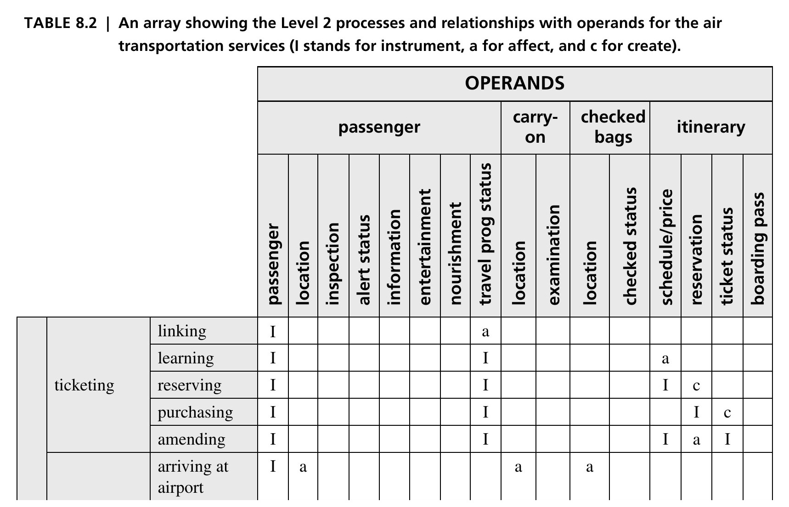
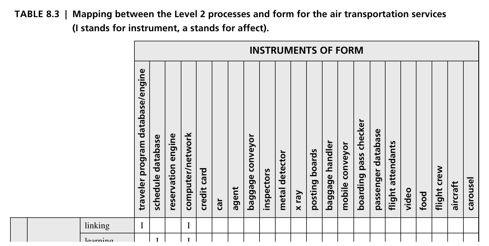
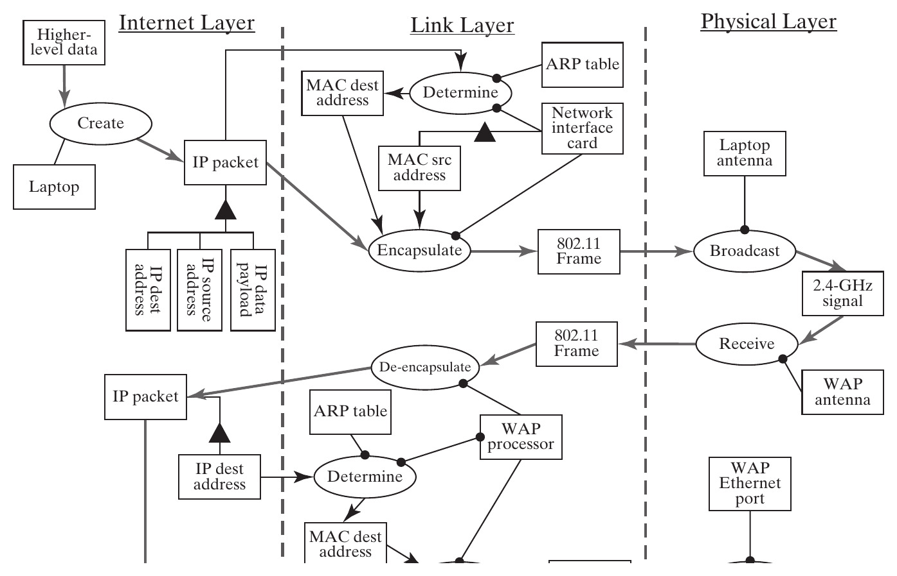
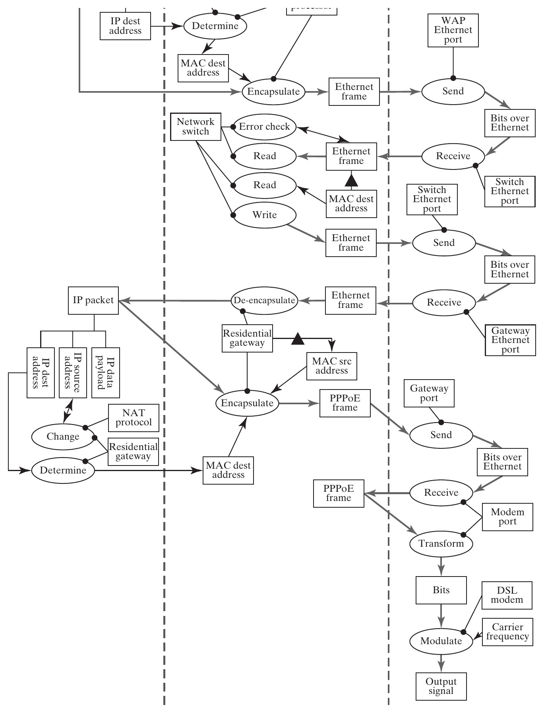
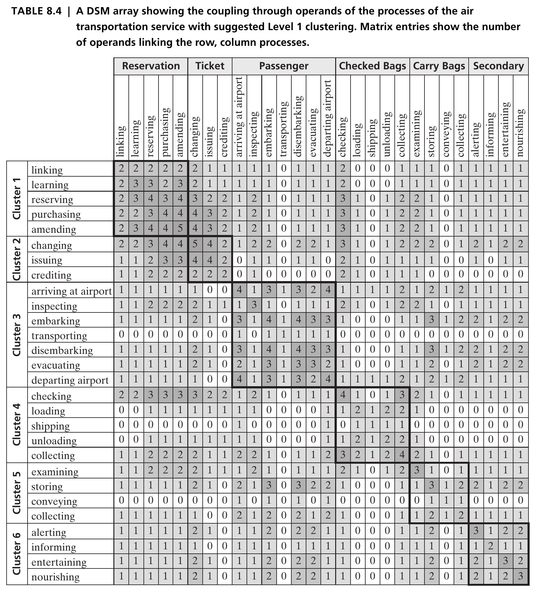

From Concept to Architecture
Systems Architecture · Chapter 8
Closing the Loop on Analysis
- Concept is a notional mapping between form and function — architecture is a comprehensive, detailed one
- The amount of information needed to describe architecture is orders of magnitude larger than what’s needed for concept: a pump or bubblesort concept fits in one line, but the full architecture needs everything from Chapter 6
- This chapter shows the process: concept → Level 1 architecture → Level 2 architecture → modularization
Tip
Running example: an air transportation service. Section 8.4 repeats the process for the home data network.
Two New Questions
Table 8.1 compiles every question from Chapters 4–7, in the order they’re addressed during synthesis, plus two new ones this chapter answers:
8a. How does the architecture of Level 1 extend to Level 2?
8b. What is a possible modularization of the Level 2 objects?
8.2 Developing the Level 1 Architecture
Expanding Concept to Functional Architecture
- First task: identify the value pathway — start with the key internal functions from the integrated concept (Question 5b), and link them from inputs/start points to outputs/end points
- Concept: flying a traveler with an airplane. Primary operand: the traveler. Secondary operand: checked baggage
- Every process acts on the traveler except purchasing the ticket; the only other operand is the ticket itself — an information object encoding itinerary, status, reservation, and fees
Figure 8.1 · Primary Value Delivery

A simple “no-frills” airline: purchasing → check in → loading → transporting → unloading → check out. Source: Crawley, Cameron & Selva (2016), Fig. 8.1.
Figure 8.2 · Adding Secondary Value

Nourishing, entertaining, and crediting (a frequent-flyer program) add secondary value — and make the architecture noticeably more complex, since much of the operational detail must now be replicated for baggage too. Source: Crawley, Cameron & Selva (2016), Fig. 8.2.
Defining the Form: Zigzagging Back
- Recall Chapter 3’s zigzagging: reason in one domain as long as practical, then switch. We’ve gone as far as we can in function — time to “zig” into form (Questions 4a–4f)
- 4a. The form is the airline’s employees and equipment, plus leased airport entities directly tied to processing (ticket desks, baggage conveyors) — excluding non-airline airport services (parking, arriving by car) and government-run ATC/navigation/security
- 4d–4f. Accompanying systems (navigation satellites, ATC towers) are only inferred, not shown; the one explicit interface is federally supplied security inspection at check-in; use context is a single domestic leg with substantial surrounding infrastructure (roads, rental cars) left out of scope
Mapping Function to Form
- “Zag” back to function: the reservation system is an instrument of virtually every process — the check-in and gate systems only get the traveler checked in and boarded; the flight crew is responsible only for transporting (Question 6a)
- Non-idealities (6b): this model doesn’t yet handle a transiting passenger, a hub connection, or international travel with passport control
- Supporting functions (6c) are enumerated in Figure 8.2 but not yet connected — nearly every value-related instrument needs personnel who must be trained and supported (HR), and mapping that fully requires Level 2 detail
Sequence and Parallel Threads
- Sequence (6e) is inferred directly from how Figure 8.2 is drawn: processes are listed vertically in the order they occur
- Parallel threads (6f) are strongly suggested: baggage has almost an entire parallel path to the passenger, separating at check-in and (hopefully) reuniting at check-out
- Clock time (6g) clearly matters — aircraft keep real schedules — but that information isn’t shown here; it would need additional diagrams
Figure 8.3 · Reasoning Down Through the Levels

The starting point for Level 1 is the Level 0 information: the solution-neutral function, the concept, and the concept of operations. Source: Crawley, Cameron & Selva (2016), Fig. 8.3.
Function-Goal Reasoning
The solution at one level becomes the problem statement at the next.
- The Level 0 specific function (the functional half of the concept) becomes the functional intent at Level 1
- That intent is specialized and zoomed into the Level 1 functional architecture — operands and internal processes — while Level 0 form is decomposed into Level 1 entities of form and mapped onto them
- The rest of Level 1 detail fills in from there: non-idealities, supporting processes and form, interfaces
Section 8.2 Summary
- Level 1 architecture begins from the value pathway: the key internal functions of the integrated concept, linked start to end
- Zigzagging alternates function and form — form questions (4a–4f) and function-to-form mapping (6a–6g) round out the picture
- Function-goal reasoning governs the whole process: the specific function at one level is the functional intent one level down
8.3 Developing the Level 2 Architecture
Intent and Recursion at Level 2
- The complete Level 1 architecture already has 18+ internal processes (9 value-related + supporting) plus their form and interfaces — already a great deal of complexity
- The key question: is Level 1 the right decomposition — or at least a good one? We can’t fully judge that without seeing how the details actually work
- We recursively apply Table 8.1, one more level down: each function at Level 1 becomes a statement of functional intent at Level 2 — the same function–goal reasoning as Figure 8.3, one level lower
Tip
Example: “purchasing tickets” (Level 1) becomes the Level 2 intent, specialized down to purchasing online and beyond.
Figure 8.4 · Zooming to Level 2 for Ticket Purchasing

Purchasing specializes into 5 internal processes (linking, learning, reserving, purchasing, amending) and reveals 3 new internal operands and 3 new accompanying instruments — all hidden at Level 1. Source: Crawley, Cameron & Selva (2016), Fig. 8.4.
Table 8.2 · Level 2 Processes and Operands

Applying this zooming to all 9 Level 1 value processes produces 28 internal processes at Level 2 (excerpt shown — ticketing and part of checking-in). Note 3 processes (entertaining, nourishing, crediting) get “demoted” from Level 1 — such judgment calls are routine in architecting. Source: Crawley, Cameron & Selva (2016), Table 8.2.
Table 8.3 · Level 2 Processes Mapped to Form

28 processes mapped onto 22 instruments of form (excerpt shown) — close to one-to-one, with notable exceptions: agents and flight attendants are human, and adapt to many roles. Source: Crawley, Cameron & Selva (2016), Table 8.3.
Do We Need Level 3?
- Together, Tables 8.2 and 8.3 are the Level 2 architecture — though still without supporting systems, interfaces, or external accompanying systems
- Typical scale: Level 1 ≈ 20–30 entities; Level 2 ≈ 50–100; Level 3 would run into the hundreds
Three levels are hard to develop and too much to comprehend easily — we usually don’t need to go to Level 3. Examining Level 2 exists to confirm Level 1’s abstractions and inform modularization — not to fully re-architect everything one level deeper.
Section 8.3 Summary
- Level 2 architecture is developed by recursively applying the same procedure: each Level 1 function becomes the Level 2 functional intent
- The result is dramatically more detailed — dozens of processes and operands, mapped onto dozens of form instruments
- The purpose isn’t more detail for its own sake: it’s to validate the Level 1 decomposition and enable good modularization (Section 8.5)
8.4 Home Data Network Architecture at Level 2
A Second Worked Example
- Recall from Chapter 7: solution-neutral function is buying a book; the integrated concept is accessing the Internet via a DSL modem, residential gateway/switch, WiFi access point, and laptop
- Figure 8.5 traces an IP packet’s Level 2 architecture, from the laptop until it leaves the house — broken into three layers: Internet, Link, and Physical (mirroring the bottom of the standard Internet protocol suite)
Tip
Layering lets a network designer view the system through the lens of a single layer at a time — powerful for scalability and robustness, but it makes the functional pathway of the data harder to trace end to end.
Figure 8.5a · Laptop to Wireless Access Point

The laptop creates an IP packet, encapsulates it into an 802.11 frame with MAC addressing (via ARP), and broadcasts it over WiFi; the WAP receives, de-encapsulates, and re-encapsulates it as an Ethernet frame toward the switch. Source: Crawley, Cameron & Selva (2016), Fig. 8.5.
Figure 8.5b · Switch to the ISP

The switch error-checks, reads the destination, and forwards the frame to the gateway, which de-encapsulates it, performs NAT (network address translation) to swap the private IP for a public one, and re-encapsulates it as PPPoE — modulated by the DSL modem onto the phone line toward the ISP. Source: Crawley, Cameron & Selva (2016), Fig. 8.5.
Section 8.4 Summary
- The home network expands to Level 2 the same way: 24 internal processes, following the same recursive function–goal reasoning
- Instruments include both physical devices (laptop, switch, antenna) and informational objects (software, data tables like the ARP table)
- The Level 2 model — and specifically its layered structure — lets us judge whether the Level 1 model was robust and well-modularized
8.5 Modularizing the System at Level 1
Why Modularize?
- We initially organized Level 1 by the timeline of air travel: ticketing, checking in, loading, transporting, unloading, checking out. Is that actually a good decomposition?
- Objective: cluster entities that are tightly interconnected — this minimizes interactions across modules and maximizes coherence within them
- First choice: cluster by process (via shared operands) or by form (via structure) — Box 8.1 covers both
Box 8.1 · Clustering by Interactions
Three tasks: choose the basis for clustering (processes or form), represent that information (as a DSM), and compute the clusters. Replacing the interaction type (create/affect/instrument) with a simple count of connections lets a clustering algorithm rearrange rows and columns into tightly coupled blocks.
Tip
Here, clustering is based on processes, linked through shared operands: two processes that touch many of the same operands are assumed to be tightly coupled.
Table 8.4 · DSM Clustering of Level 2 Processes

The Thebeau algorithm reorders the 28×28 process-interaction matrix so tightly-coupled entities fall into contiguous, shaded blocks along the diagonal — six clusters emerge. Individual cell values aren’t the point here; the block-diagonal pattern is. Source: Crawley, Cameron & Selva (2016), Table 8.4.
Six Clusters Emerge
- Cluster 1 (reservation): linking, learning, reserving, purchasing, amending
- Cluster 2 (ticket): changing, issuing, crediting
- Clusters 3–5 (passenger, checked bags, carry-on bags): each follows the same check-in → move → check-out pattern for its respective operand
- Cluster 6 (secondary experience): alerting, informing, entertaining, nourishing
Tip
This clustering is organized by operand path, not by chronology — a genuinely different decomposition than the original timeline-based one.
Two Decompositions, Neither “Right”
- The clustering isn’t perfect — interactions still cross block boundaries — and clustering doesn’t guarantee a better modularization, just a systematic one
- The original, timeline-based decomposition (Figure 8.2) and this operand-based one (Table 8.4) represent two different ways of organizing the same system
If the airline cared about running time, the time-based organization might make more sense. If it cared about end-to-end reliability per passenger or bag, the operand-based clustering looks more appropriate.
Section 8.5 Summary
- Modularizing Level 1 well requires expanding to Level 2, examining relationships by process or form, and then clustering
- Clustering algorithms maximize local interaction and minimize cross-block interaction — better informing internal interfaces and how design work gets distributed
- No single decomposition is universally “correct” — the right one depends on what the architect is optimizing for
Chapter 8 Summary
- Concept expands into architecture through a recursive process: Level 0 → Level 1 → Level 2, applying function–goal reasoning at each step
- Level 1 architecture starts from the value pathway (Question 5b), then zigzags between function and form to fill in the rest (Questions 4, 5, 6)
- Level 2 architecture, developed the same way, has two jobs: validate that Level 1 is a reasonable decomposition, and inform its modularization
- This closes Part 2 — analysis of form (Ch. 4), function (Ch. 5), form-to-function mapping (Ch. 6), solution-neutral function and concept (Ch. 7), and Level 1/2 architecture (Ch. 8)
Tip
Reference: Crawley, E., Cameron, B., & Selva, D. (2016). System Architecture: Strategy and Product Development for Complex Systems. Pearson. Chapter 8.
Next: Part 3 — Creating System Architecture
Having analyzed how architecture is built, we turn to real synthesis: defining architectures that don’t yet exist, for complex systems, starting with the role of the architect (Chapter 9).

← Course Home · Systems Architecture · Chapter 8